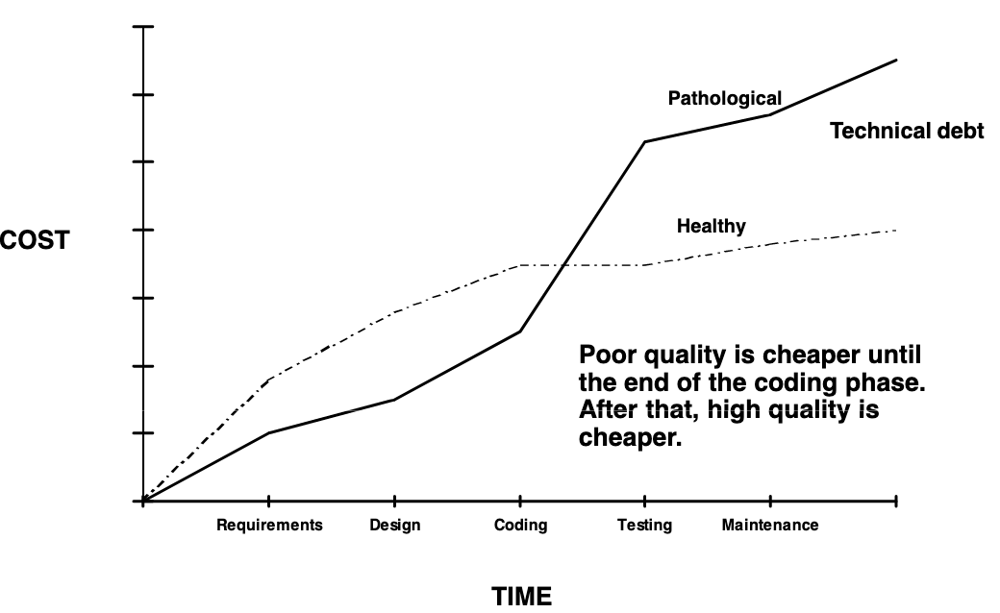
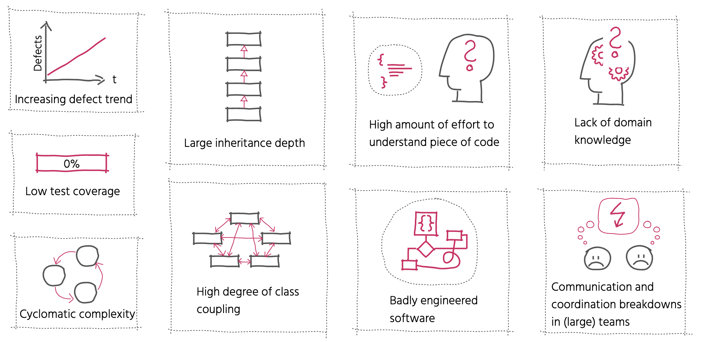
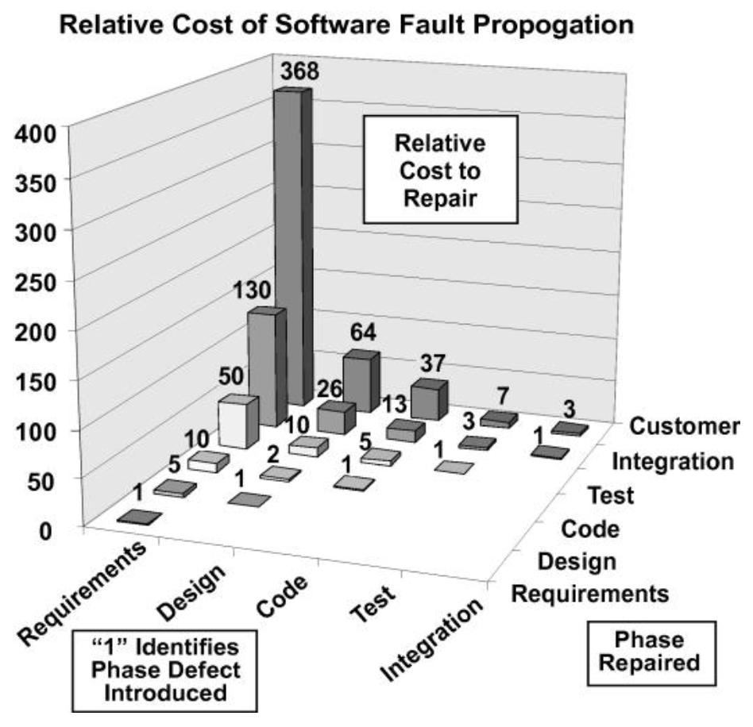
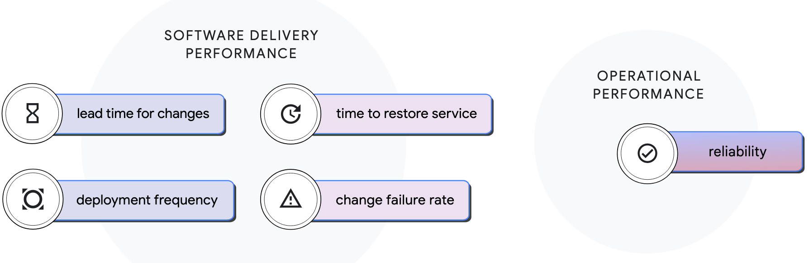
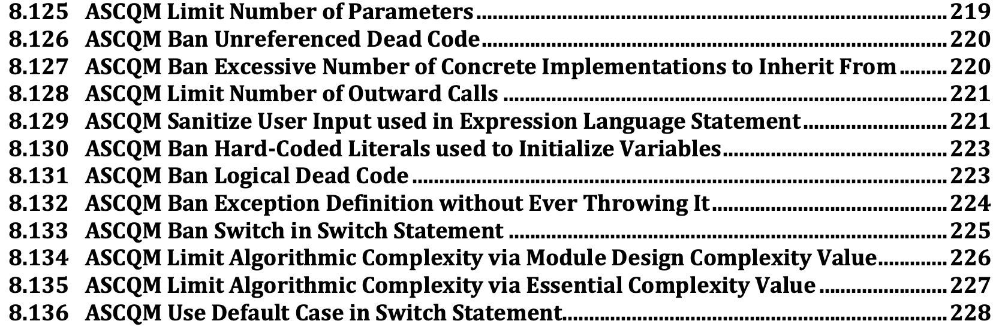
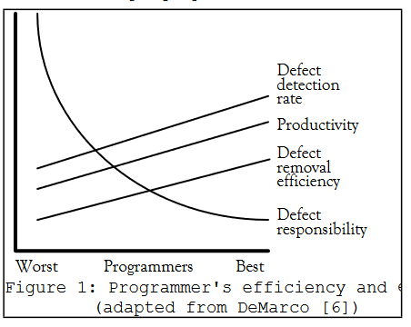

### Code smells & anti-patterns “If you’re good at the debugger it means you spent a lot of time debugging. I don’t want you to be good at the debugger.” — Robert C. Martin “So if you want to go fast, if you want to get done quickly, if you want your code to be easy to write, make it easy to read.” — Robert C. Martin // Name: Jukka Nikki, Identity: Programmer, Since: 6502 // TODO: Get Better as Software Developer
#### The Cost of Poor Software Quality in the US "2019-2020 was dominated by the biggest software failures in recent history including ransomware attacks, cybersecurity attacks, IT outages, and data leakages that affected some of the biggest companies and millions of customers around the world. Software failures wreaked havoc at banks, airlines, and in government systems, costing billions of dollars in damage and creating devastating disruption." - Cisq, 2020
#### QUALITY AFFECTS SOFTWARE COSTS  "The most effective way of improving software productivity and shortening project schedules is to reduce defect levels." - Capers Jones
#### Indications of Poor Software Quality  "Most defects end up costing more than it would have cost to prevent them. Defects are expensive when they occur, both the direct costs of fixing the defects and the indirect costs because of damaged relationships, lost business, and lost development time." — Kent Beck, Extreme Programming Explained
#### [The Humble Programmer](https://www.cs.utexas.edu/users/EWD/transcriptions/EWD03xx/EWD340.html), Edsger W. Dijkstra "Those who want really reliable software will discover that they must find means of avoiding the majority of bugs to start with, and as a result the programming process will become cheaper. If you want more effective programmers, you will discover that they should not waste their time debugging, they should not introduce the bugs to start with."
#### Relative Cost of Fixing a Defect (Nist)  ".. substantial increase in project costs caused by carrying problems from one development stage to the next."
#### 4 key metrics: Change failure rate  "For the primary application or service you work on, what percentage of changes to production or released to users result in degraded service (e.g., lead to service impairment or service outage) and subsequently require remediation (e.g., require a hotfix, rollback, fix forward, patch)?" - State of DevOps 2021
#### ISO/IEC STANDARD 5055, First edition 2021-03  "Recent advances in measuring the structural quality of software involve detecting violations of good architectural and coding practice from statically analyzing source code." - Iso, 2021
### Code Smell: Highly subjective? "a code smell is any characteristic in the source code of a program that possibly indicates a deeper problem. Determining what is and is not a code smell is subjective, and varies by language, developer, and development methodology." - Wikipedia
### Code Smell: Just a hint? "CodeSmell is a hint that something might be wrong, not a certainty. A perfectly good idiom may be considered a CodeSmell because it's often misused, or because there's a simpler alternative that works in most cases. Calling something a CodeSmell is not an attack; it's simply a sign that a closer look is warranted." - c2.com
#### Anti-pattern: Common problematic approach? "An anti-pattern is a common response to a recurring problem that is usually ineffective and risks being highly counterproductive" - Wikipedia
#### [mandatory joke](https://www.commitstrip.com/en/2016/08/25/a-very-comprehensive-and-precise-spec/?) <img alt="No Code" src="images/code_spec_strip.jpg" width="60%">
# Business Value or for what user pays to us
## [One Skull Rule](https://www.linkedin.com/pulse/hard-thing-software-development-jesse-watson/) "The most valuable asset in the software industry is the synthesis of programming skill and deep context in the business problem domain, in one skull." or: 10x superpower which is hardly given value "Domain Knowledge: One of the most under-appreciated skills that programmers have; and a key reason why programmers aren't commodities." - [wiki.c2.com](https://wiki.c2.com/?DomainKnowledge)
# Software Evolution or: how success kills
## second law of thermodynamics "The second law of thermodynamics, in principle, states that a closed system's disorder cannot be reduced, it can only remain unchanged or increase. A measure of this disorder is entropy. This law also seems plausible for software systems; as a system is modified, its disorder, or entropy, tends to increase. This is known as [software entropy](https://en.wikipedia.org/wiki/Software_entropy)."
#### [Tesler’s Law of Conservation as Complexity](https://en.wikipedia.org/wiki/Law_of_conservation_of_complexity) “Every application has an inherent amount of complexity that cannot be removed or hidden. Instead, it must be dealt with, either in product development or in user interaction.” -- "For every 10-percent increase in problem complexity, there is a 100-percent increase in the software solution’s complexity. That’s not a condition to try to change (even though reducing complexity is always desirable); that’s just the way it is." — Robert Glass
## [Hoare's Maxim](https://www.goodreads.com/author/quotes/266154.C_A_R_Hoare) "There are two ways of constructing a software design. One way is to make it so simple that there are obviously no deficiencies. And the other way is to make it so complicated that there are no obvious deficiencies. The first method is far more difficult." ## [Occam’s Razor](https://en.wikipedia.org/wiki/Occam%27s_razor) “The simplest solution is most likely the right one.”
## [Zawinski’s Law](https://en.wikipedia.org/wiki/Jamie_Zawinski) “Every program attempts to expand until it can read mail. Those programs which cannot expand are replaced by ones that can.” or: [Feature creep](https://en.wikipedia.org/wiki/Feature_creep) "extra features go beyond the basic function of the product and can result in software bloat and over-complication, rather than simple design."
## [Lehman's laws](https://en.wikipedia.org/wiki/Lehman%27s_laws_of_software_evolution) "As an evolving program is continually changed, its complexity, reflecting deteriorating structure, increases unless work is done to maintain or reduce it." or: [Technical Debt](https://en.wikipedia.org/wiki/Technical_debt) "internal things that you choose not to do now, but which will impede future development if left undone. This includes deferred refactoring."
## [Gall’s Law](https://en.wikipedia.org/wiki/John_Gall_(author)) “A complex system that works has evolved from a simple system that worked. A complex system built from scratch won’t work.” Or: [KISS principle](https://en.wikipedia.org/wiki/KISS_principle) "most systems work best if they are kept simple rather than made complicated; therefore, simplicity should be a key goal in design, and unnecessary complexity should be avoided."
## [DRY](https://en.wikipedia.org/wiki/Don%27t_repeat_yourself) "Every piece of knowledge must have a single, unambiguous, authoritative representation within a system". "When the DRY principle is applied successfully, a modification of any single element of a system does not require a change in other logically unrelated elements."
## [ETC Principle](https://pragprog.com/tips/) "A thing is well designed if it adapts to the people who use it. For code, that means it must adapt by changing. So we believe in the ETC principle: Easier to Change. ETC. That’s it." - Dave Thomas, Andrew Hunt, 2019 or: [SOLID](https://en.wikipedia.org/wiki/SOLID) this and that .. "By applying these 5 principles that make the SOLID acronym, we get to benefit from a reusable, maintainable, scalable and easy testable codebase." ;)
"you are always taught to do as much as you can. Always put checks in. Always look for exceptions. Always handle the most general case. Always give the user the best advice. Always print a meaningful error message. Always this. Always that. You have so many things in the background that you're supposed to do, there's no room left to think. I say, forget all that and [ask yourself, "What's the simplest thing that could possibly work?"](https://www.artima.com/articles/the-simplest-thing-that-could-possibly-work)" - Ward Cunningham
# Requirements or what users really want?
## [Watsons Dirty little secret](https://www.linkedin.com/pulse/hard-thing-software-development-jesse-watson/) "The nature of the beast is that software requirements rarely change; what changes is our awareness of them, and our grasp of their implications. The dirty little secret in the software industry is that at the outset of every project, we don’t really know what we’re doing."
## [Humphrey’s Law](https://www.smharter.com/blog/2017/08/21/the-7-fundamental-principles-of-software-requirements/) “For a new software system, the requirements will not be completely known until after the users have used it.” or: [as Rumsfeld says](https://en.wikipedia.org/wiki/There_are_known_knowns) "there are also unknown unknowns — the ones we don't know we don't know." or is it just [Planning Fallacy](https://en.wikipedia.org/wiki/Planning_fallacy) here? "Each release represents our next “best laid plan”, which survives right up until it makes contact with the customer."
## [Pareto principle](https://en.wikipedia.org/wiki/Pareto_principle), 20/80 rule "For many events, roughly 80% of the effects come from 20% of the causes" aka "80% of users only use 20% of application’s features" aka [Muda](https://en.wikipedia.org/wiki/Muda_(Japanese_term) on Lean / [Feature creep](https://en.wikipedia.org/wiki/Feature_creep) "features not often used by customers are waste"
# Estimates or [how you know what you don't know](https://www.7pace.com/blog/software-development-planning-fallacy)
## [Planning fallacy](https://en.wikipedia.org/wiki/Planning_fallacy) "The planning fallacy is a term used by psychologists to describe our tendency to underestimate the amount of time it will take to complete a task. Key reasons: 1. Failing to consider how long it's taken us to complete similar tasks in the past 2. Assuming that we won't run into any complications that will cause delays"
## [The 90-90 Rule](https://en.wikipedia.org/wiki/Ninety%E2%80%93ninety_rule) “The first 90 percent of the code accounts for the first 90 percent of the development time. The remaining 10 percent of the code accounts for the other 90 percent of the development time.” or: [definition of almost done](https://geek-and-poke.com/geekandpoke/2012/10/1/doad.html), [#noEstimates](https://holub.com/noestimates-an-introduction/) "estimating is fundamentally guessing, yet these guesses are taken as promises"
Hofstadter is for agile, Parkinson for plan driven ## [Hofstadter’s Law](https://en.wikipedia.org/wiki/Hofstadter%27s_law) “It always takes longer than you expect, even when you account for Hofstadter’s Law.” ## [Parkinson’s Law](https://en.wikipedia.org/wiki/Parkinson%27s_law) “Work expands so as to fill the time available for its completion”
## [Brooks’ law](https://en.wikipedia.org/wiki/Brooks%27s_law) “Adding manpower to a late project makes it later.” or "What one programmer can do in one month, two programmers can do in two months." or "nine women can't make a baby in one month"
# Productivity or just blame someone else
## [10x Programmer Myth](https://insights.sei.cmu.edu/blog/programmer-moneyball-challenging-the-myth-of-individual-programmer-productivity/) "most of the differences resulted from a few very low performances, rather than exceptional high performance. (..) there are very few programmers at the extremes. (..)" "While average performance differs between programmers, only half the variation in program-development effort can be attributed to inherent programmer skill; the other half is within the individual developer's day-to-day variation. " - Bill Nichols, 2020
#### [Net Negative Producing Programmer](https://wiki.c2.com/?NetNegativeProducingProgrammer)  "Taking a poor performer off the team can often be more productive than adding a good one. In a team of ten, expect as many as three people to have a defect rate high enough to make them NNPPs." - Gordon Schulmeyer
## [Dunning–Kruger Effect](https://en.wikipedia.org/wiki/Dunning%E2%80%93Kruger_effect) "People who lack the most knowledge on a topic also lack the ability to recognize their own mistakes and errors, making them exceptionally confident and biased self-evaluators. They are also unable to fairly judge other people’s performance." but cognitive error happens on other end of spectrum also "Meanwhile, true experts often underrate themselves -- they’re so knowledgable on the subject, they can see how much they don’t know."
## [Putt’s Law](https://en.wikipedia.org/wiki/Putt%27s_Law_and_the_Successful_Technocrat) “Technology is dominated by two types of people: those who understand what they do not manage and those who manage what they do not understand.” or: [blame-game is not a solution](https://dzone.com/articles/dont-blame-bad-software-on-developers-blame-it-on-1) "Blaming programmers has been the prevailing approach for a half century of software development: It has not solved the problem yet, so it is time to look in different directions." – Boris Beizer
# Quality or just add couple of lines of bugs
## [Lister’s Law](https://www.goodreads.com/author/quotes/38238.Tom_DeMarco) “People under time pressure don’t think faster” so, why should programming go faster? "Programming is not about typing, [it's about thinking.](https://twitter.com/CodeWisdom/status/918899507596808192)" - Rich Hickey
## [Pesticide Paradox](https://www.softwaretestinghelp.com/7-principles-of-software-testing/) “If the same tests are repeated over and over again, eventually the same test cases will no longer find new bugs.” ## [Robustness Principle / Postel’s Law](https://en.wikipedia.org/wiki/Robustness_principle) "Be conservative in what you do, be liberal in what you accept from others."
## [Goodhart’s Law](https://en.wikipedia.org/wiki/Goodhart%27s_law) <img alt="think what you reward" src="images/goodharts_law.png" width="50%"> “Any observed statistical regularity will tend to collapse once pressure is placed upon it for control purposes.”
## [Campbell’s Law](https://en.wikipedia.org/wiki/Campbell%27s_law) "The more any quantitative social indicator is used for social decision-making, the more subject it will be to corruption pressures and the more apt it will be to distort and corrupt the social processes it is intended to monitor."
## Lubarsky’s law of Cybernetic Entomology “There’s always one more bug.” and why open source should have less ## Linus’ law “Given enough eyeballs, all bugs are shallow.”
## Flon’s Law "There is not now, nor will there ever be, a programming language in which it is the least bit difficult to write bad code." but there's reason to try to write good code ## [Eagleson’s law](https://www.ithistory.org/quotes/eagleson%E2%80%99s-law) “Any code of your own that you haven’t looked at for six or more months might as well have been written by someone else.”
# Technologies & Design
#### [Fallacies of distributed computing](https://en.wikipedia.org/wiki/Fallacies_of_distributed_computing) 1. The network is reliable. 2. Latency is zero. 3. Bandwidth is infinite. 4. The network is secure. 5. Topology doesn't change. 6. There is one administrator. 7. Transport cost is zero. 8. The network is homogeneous. false assumptions that programmers new to distributed applications invariably make.
[CAP theorem](https://en.wikipedia.org/wiki/CAP_theorem): it is impossible for a distributed data store to simultaneously provide more than two out of the following three guarantees: 1. Consistency: Every read receives the most recent write or an error 2. Availability: Every request receives a (non-error) response, without the guarantee that it contains the most recent write 3. Partition tolerance: The system continues to operate despite an arbitrary number of messages being dropped (or delayed) by the network between nodes
## [Solid principles](https://en.wikipedia.org/wiki/SOLID) * Single-responsibility: "There should never be more than one reason for a class to change." * Open–closed principle: "Software entities should be open for extension, but closed for modification." * Liskov substitution: "Functions that have references to base classes must be able to use objects of derived classes without knowing it". * Interface segregation: "Many client-specific interfaces are better than one general-purpose interface." * Dependency inversion: "Depend upon abstractions"
## [Conway's law](https://en.wikipedia.org/wiki/Conway%27s_law) "Any organization that designs a system (defined broadly) will produce a design whose structure is a copy of the organization's communication structure." "The law is based on the reasoning that in order for a software module to function, multiple authors must communicate frequently with each other. Therefore, the software interface structure of a system will reflect the social boundaries of the organizations that produced it, across which communication is more difficult."